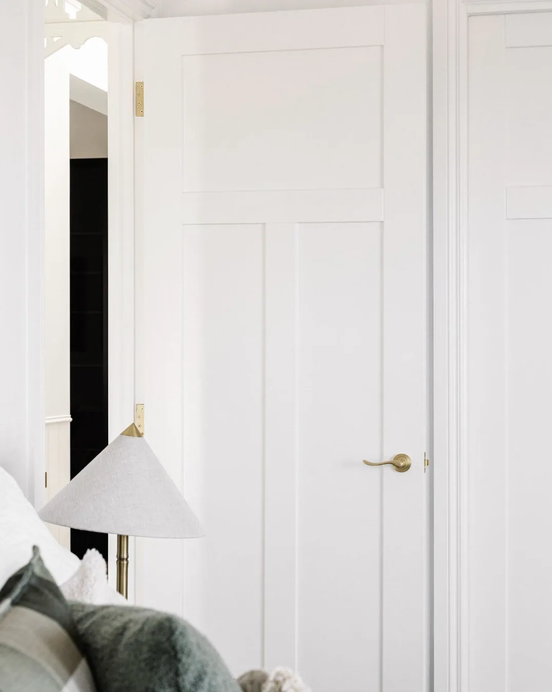

Doors
Use painted-white craftsman-style casing around interior doorways and open passages, matching the window trim: wide flat side boards, a deeper header, and a small projecting cap and bead. Trim both sides of interior passages and the interior face of exterior door assemblies. Keep floor-level openings clear, without a sill or apron across the walkway. The dining patio door has a White leaf, jambs, header, and shared window/door mullion, with glass, dark hardware, and a dark threshold. Retain its inward hinging and closed display. Keep the patio-end chair clear of the full 180-degree modeled swing; even its tucked pose conflicts, and the viewer toggle does not move furniture or approve clearance. The window bay immediately beside it also has White frames and sashes inside and outside, matching the door. Other windows retain Black exteriors and White interiors. Other door leaves and hardware retain their existing finishes. The 3D profiles are provisional; coordinate actual occupied circulation, cabinet junctions, casing returns, and door operation before construction.
Front entry lock: Wyze selected; exact model and finish remain undecided. Use one smart lock on the active leaf, not a smart lock on both leaves. The model's interior housing and active-leaf side are schematic. Confirm the door stile/glazing, bore/backset, latch system, inactive-leaf hardware, and free interior egress before fabrication. See the selection and installation checks.
Eight-foot doors throughout
All house doors are nominally 8 feet tall (96 inches), on both floors: interior, exterior, closet, patio and garage doors. The shower has fixed splash glass and no modeled door leaf. Match doorless cased passages to the same 8-foot head. Door leaves have small modeled fitting gaps within their nominal openings; these are not manufacturer rough-opening allowances. Cabinet and appliance fronts retain their own designed sizes. Preserve widths, hardware heights, handing and display poses. Coordinate actual units, headers, casing, safety glazing and hardware before construction; the tall shower enclosure needs a supplier-approved glass/support system.
In the 3D viewer, click or tap a modeled house-door leaf to toggle it; the patio door also retains its keyboard-accessible Open/Close button. Hinged leaves generally use a 180-degree modeled endpoint; Fisher & Paykel columns use 115 degrees, and mudroom bifolds and the new house/garage leaf use 90 degrees. Pocket sliders travel to their modeled rail endpoints; exterior garage doors rotate to a conceptual overhead pose. The new house/garage leaf defaults 90 degrees inward into the mudroom; other starting poses stay unchanged, including closed patio/front/pocket/closet doors and open office/powder leaves. The walk-in shower has no door leaf. These are display limits, not verified hardware stops, operating clearances, structural approval, or construction drawings. Cabinet fronts and vehicle doors are separate interactions.
Guest entry doors
The guest coat closet uses paired solid white-oak Shaker French doors, not sliding doors or bifolds: two nominal 24-inch leaves hinged at the outer jambs, meeting at the center of the unchanged 48 × 96-inch opening. Both start closed; click either leaf to swing it 90 degrees outward into the alcove, then click again to close. Retain satin-gold pulls and concealed coat storage. Actual stops and occupied circulation require verification.
For the separate guest-entry alcove, provide a nominal 30 × 96-inch painted-white powder door at x = 7.1 ft, z = 38-40.5 ft, south-jamb hinged and shown 90 degrees open into the powder room. Click/tap the leaf to toggle closed or to the 180-degree modeled endpoint. Center its opening between finished alcove walls to allow casing at both jambs. The reach-in guest coat closet has a separate 48 × 96-inch opening at z = 37.5 ft, x = 7.65-11.65 ft, with two closed white-oak Shaker leaves and satin-gold pulls; click/tap either leaf to toggle it. Neither door requires entering the other room. Verify actual frame clear widths, hardware, swings, accessibility and fixture clearance. See the guest-entry layout.
Guest-bedroom suite doors
The guest walk-in retains its doorless 30 × 96-inch cased entry at z = 42, x = 21.35-23.85. The sink alcove has a south privacy return at x = 29.26-31.2, z = 43.2, ending flush with the closed vanity hardware, with an open passage around its west end: no door or spanning header. A nominal 30 × 96-inch pocket-door proposal separates the sink alcove from the toilet/shower room at x = 25-27.5, z = 39.6: white paneled leaf, flush privacy pulls, 28-inch finished-clear target, shown closed and retracting east. Schematic cavity x = 27.5-30.15 requires framing, wall-thickness, services, nonpenetrating-fixing and privacy review. The east-side shower has a 30-inch west-facing doorless opening at x = 27.875, z = 36.775-39.275, between fixed splash-glass panels. Verify anchorage, safety glazing, splash containment and actual products. Retained shower curb requires stepping over. See suite layout and route limits.
The house-to-garage opening stays nominally 36 × 96 inches at x = 39.5-42.5 ft, z = 26.9. Add a solid, nominal 1.75-inch-thick leaf, west hinge, shown 90 degrees inward into the mudroom; click/tap toggles 0/90. Move baskets north of the kitchen opening. Sampled sweep checks include both levers; parked-open door-to-bench clearance is about 36.7 inches. Modeled bottom clearance is 1/2 inch above finished tile/grout. These are concept dimensions, not an approved door unit or occupied route. Confirm rated separation, self-closing/latching, installation gaps, required landing and steps; an open display is not approval to hold a fire door open. Both vehicle openings remain 9 × 8 feet and the exterior pedestrian door remains 8 feet tall.
Office double doors
Match the latest reference photo with white 10-lite French doors: two columns by five rows of clear glazing per leaf, white muntins and substantial perimeter framing, round gold knobs, and dark hinges. Remove the former oak lower panels and privacy glass. Retain the nominal 5 ft-wide, 8 ft-high pair with two nominal 30-inch leaves and white Craftsman casing on both faces.
Opening x = 12.2 ft, center z = 45.25 ft, span z = 42.75-47.75 ft; no transom. Keep both leaves fully open inward at 90 degrees into the office, perpendicular to the opening, with conceptual hinges. The reference-photo 10-lite style remains; this supersedes both the closed and partly open displays. Clicking a leaf toggles it closed or to the 180-degree modeled endpoint. These nominal dimensions are not approved unit, rough-opening, acoustic, or clear-passage specifications. Confirm safety glazing, true/simulated divided lites, handing, jambs, active/inactive hardware, and occupied swings beside the loveseat. See office requirements.
Kids' room entry
The current opening schedule records sizes, coordinates, modeled operation, and pending door details. The patio leaf occupies the higher-z half of its assembly, hinges at the higher-z jamb, and stays closed at 0 degrees by default; click/tap toggles it to a 180-degree inward display and back, with the dining-view button as a keyboard equivalent. The lower-z half contains two stacked casements. Keep the patio-end chair tucked for door operation; a pulled-out chair conflicts with the swing, and the toggle does not move furniture or approve clearance. Actual products and occupied passage need verification.
After swapping the stairs and kids room, the kids room occupies x = 19-29 ft, z = 25.7-34.6 ft. Its single doorless entry faces west toward the relocated stairs/hall at x = 19 ft, spanning z = 27-31.5 ft. Keep the 4 ft 6 in width, 8 ft height, and Craftsman casing on both faces. No door leaves or hardware. The former kids-room east partition at x = 12.2 is removed to connect the west stair approach to the hall; the living-room boundary remains closed. Powder-room and office access stay unchanged. See the coordinated layout. Verify structural framing, finished dimensions, circulation, and code requirements. No direct sofa-to-playroom supervision sightline or acoustic separation is claimed.
